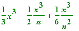
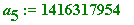
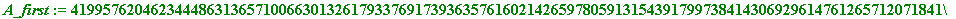
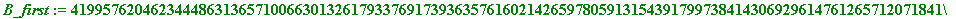

CIT, Tuesday 19th May 1998
On the use of MAPLE in the
undergraduate programme in
St. Patrick' College, Drumcondra
Speaker: John Cosgrave, St. Pat's.
e-mail: John.Cosgrave@spd.ie
johnbcos@iol.ie
Pat's staff: JC, OB (Olivia Bree) and MD (Mark Daly)
First Year. 2 year-long courses:
1. Finite Mathematics (some use of MAPLE). [OB]
2. Calculus/Analysis (intensive use of MAPLE)
in lectures, plus one lab. class per week. [JC]
Second Year. 4 half-year long courses:
1. Linear Algebra. [OB]
2. Real Analysis (intensive use of MAPLE)
in lectures, plus one lab. class per week. [MD]
3. Number Theory (intensive use of MAPLE)
in lectures, plus one lab. class per week. [JC]
4. Differential equations and Numerical Analysis
(intensive use of MAPLE) in lectures, plus one lab.
class per week. [MD]
Third Year. 4 half-year long courses:
1. Modern Algebra. [OB]
2. Multivariable Analysis (intensive use of MAPLE)
in lectures, plus one lab. class per week. [MD]
3. Number Theory and Cryptography
(intensive use of MAPLE) in lectures, plus one lab.
class per week. [JC]
4. Statistics (intensive use of EXCEL) in lectures, plus
one lab. class per week. [MD]
Examples of some first year work
1. Area
2. Newton-Raphson
1. AREA
> with(student);
> leftbox(x^2, x=0..1, 20); # I have removed the output for printing
> rightbox(x^2, x=0..1, 20); # I have removed the output for printing
Next we need to load in the 'plots package'
(so as to have access to 'display'):
> with(plots);

>
>
for i from 2 to 6 do
pl1 := leftbox(x^2, x=0..1, 2^(i)):
pl2 := rightbox(x^2, x=0..1, 2^(i)):
pl[i]:=display([pl1, pl2]):
od:
display([seq(pl[i], i=2..6)], insequence=true);
# I have removed the output for printing:
>
Those pictures give us the FEELING for what is going on;
now for some numbers:
>
value(leftsum(x^2, x=0..1, 2000));
value(rightsum(x^2, x=0..1, 2000));
>
evalf(leftsum(x^2, x=0..1, 2000));
evalf(rightsum(x^2, x=0..1, 2000));
> leftsum(x^2, x=0..1, n);
> expand(value(leftsum(x^2, x=0..1, n)));
> expand(value(rightsum(x^2, x=0..1, n)));
![[Maple Math]](images/CIT_TALK15.gif)
> expand(value(leftsum(t^2, t=0..x, n)));

> expand(value(rightsum(t^2, t=0..x, n)));
> limit(expand(value(leftsum(t^2, t=0..x, n))), n=infinity);

> limit(expand(value(rightsum(t^2, t=0..x, n))), n=infinity);
>
2. Newton-Raphson
> plot(x^2 - 2, x = -2..2); # I have removed the outputs for printing
> showtangent(x^2 - 2, x=2, x=-2..3);
> showtangent(x^2 - 2, x=2, x=-2..3, y=-2..4);
> showtangent(x^2 - 2, x=1.5, x=1.39..1.51);
>
f := x -> x^2 - 2:
x[0] := 2;
for k to 5 do
x[k] := x[k-1] - f(x[k-1])/D(f)(x[k-1])
od;


> seq(evalf(x[k]), k=1..5);
> evalf(sqrt(2));
>
f := x -> x^2 - 2:
x[0] := 2;
for k to 7 do
x[k] := x[k-1] - f(x[k-1])/D(f)(x[k-1])
od;


> seq(evalf(x[k], 30), k=1..8);
> evalf(sqrt(2), 30);

>
An example of some second year work
The Lucas-Lehmer theorem
The Lucas-Lehmer Test for primality of Mersenne numbers.
Let's start off by just looking at a simple Maple programme for calculating
some early terms of the 'Lucas-Lehmer sequence'.
Let's do just the first 8 of them:
>
a[1]:= 4;
for k from 2 to 8 do
a[k]:= a[k-1]^2 - 2
od;

>
Now let's make a Maple procedure, with name L-L:
> L_L_test := proc(p)
local Mp, a, k;
Mp := 2^p - 1:
a[1]:= 4;
for k from 2 to p do
a[k]:= a[k-1]^2 - 2 mod Mp
od;
if a[p-1] mod Mp = 0 then
lprint(Mp,`is a Mersenne prime`)
else
lprint(Mp,`is composite`)
fi;
end:
> L_L_test(113);
10384593717069655257060992658440191 is composite
The largest know prime until 1953 was Lucas' own:
> L_L_test(127);
170141183460469231731687303715884105727 is a Mersenne prime
This is from the 1950's:
> nextprime(521);

> L_L_test(523);
27459190640522438859927603196325572869077741200573221637577853836742172733590624208490238562645818219909185245565923432148487951998866575250296113164460228607 is composite
>
Examples of some third year work
1. Fast gcd.
2. Pollard p-1 factoring method (1974)
3. Public-key cryptography
1. Fast gcd
In the Pollard 'Monte Carlo' (also known as 'rho') and 'p - 1' factoring methods,
the Euclidean algorithm for calculating gcd's plays a fundamental role. These two
remarkable methods have beautiful ideas at their roots, but they would be utterly
useless (from a computational point of view) were it not for the SPEED of the
Euclidean algorithm, the SPEED at which the gcd calculation can be carried out.
The purpose of this worksheet is to demonstrate the SPEED of the
Euclidean algorithm, and SEE the successive divisions of the method:
>
gcd_and_steps := proc(A, B)
local a, b, r, k, K;
a[1] := A:
b[1] := B:
r[1] := a[1] mod b[1]:
if r[1] = 0 then
lprint(`the greatest common divisor of`,
A,`and`, B,`is`, b[1])
else
for k from 2 while r[k-1]<>0 do
a[k] := b[k-1]:
b[k] := r[k-1]:
r[k] := a[k] mod b[k]:
od;
lprint(`the greatest common divisor of`,
A,`and`, B,`is`, r[k-2]);
seq([a[K], b[K], iquo(a[K], b[K]), r[K]],
K = 1..k - 1);
fi;
end:
Maple has its own built-in (i)gcd command:
> igcd(1809887765443356, 1478685544);

> gcd_and_steps(1809887765443356, 1478685544);
the greatest common divisor of 1809887765443356 and 1478685544 is 4
>
2. The Pollard 'p-1' factorization method (1974)
>
Pollard := proc(seed, n)
local a, k;
a[1] := seed:
for k from 2 while
igcd(n, a[k-1]-1 mod n) = 1 do
a[k] := a[k-1]&^k mod n
od:
if igcd(n, a[k-1]-1 mod n) < n then
lprint(`After`,k-1,`steps we find that`,
gcd(n, a[k-1]-1 mod n),`is a PROPER factor of`, n)
else lprint(`Try some other seed`)
fi
end:
>
> Pollard(2, 1234321);
After 5 steps we find that 11 is a PROPER factor of 1234321
> Pollard(2, 341);
Try some other seed
> Pollard(3, 341);
Try some other seed
> Pollard(5, 341);
After 3 steps we find that 31 is a PROPER factor of 341
> p1 := 27! + 1; length(p1); isprime(p1);

> q1 := nextprime(10^34 + 98765432); length(q1);
> n1 := p1*q1;
> Pollard(2, n1);
After 27 steps we find that 10888869450418352160768000001 is a PROPER factor of 108888694504183521607680001085444102150690689835076026466765451
> p2 := 77! + 1; length(p2); isprime(p2);

> q2 := nextprime(10^120 + 12343200000098765432); length(q2);
> n2 := p2*q2;
> Pollard(2, n2);
After 77 steps we find that 145183092028285869634070784086308284983740379224208358846781574688061991349156420080065207861248000000000000000001 is a PROPER factor of 145183092028285869634070784086308284983740379224208358846781574688061991349156420080065207861248000001792023941538877238502812624482619681596714040751781309024833600516245643825068860671877281362044020372301926105100343200000098765581
>
3. Public-key cryptography
We see how two parties - A and B - can communicate and 'sign':
>
`crypt/alphabet` :=
`abcdefghijklmnopqrstuvwxyz`
.`ABCDEFGHIJKLMNOPQRSTUVWXYZ`
.```1234567890-=~!@#$£%^&*()_+`
.` ,./<>?;':"[]{}| `:
>
>
to_number := proc(st, string)
local ll, nn, ss, ii; ll := length(st);
if ll = 0 then RETURN(0) fi; nn := 1;
for ii to ll do
ss := SearchText(substring(st, ii .. ii),`crypt/alphabet`);
nn := 100*nn + ss od;
nn - 10^(2*ll) end:
>
>
from_number := proc(nn, integer)
local ss, mm, ll, pp, ii, ans; mm := nn;
ll := floor(1/2*trunc(evalf(log10(mm))))+1;
ans := ``; for ii to ll do mm := mm/100;
pp := 100*frac(mm);
ss := substring(`crypt/alphabet`, pp..pp);
ans := cat(ss, ans); mm := trunc(mm)
od; ans end:
>
> to_number(`Fermat's 'little' theorem states: let p be any prime number, and a be any integer not divisible by p, then a^(p-1) = 1 (mod p).`);
>
> from_number(2935468009198001800718050120801612010305800914802308090308802015800709220580018020011211676780460805800121040905140305800919804541800120200514200922058280912821208023091212802008052580052205188009142209200580130580020103118180151880091980200809198009208692);
>
I will create public and private keys for myself (John):
> pj := nextprime(10^49 + 654321); #50 digit prime
> qj := nextprime(10^69 + 654321654321); #70 digit prime
> nj := pj*qj; # my public modulus
> ej := nextprime(1234321); # my public encryption power
>
Now to calculate my PRIVATE decryption power, dj:
> phi_nj := (pj-1)*(qj-1);
> igcdex(ej, phi_nj, xj, yj);

> dj := xj mod phi_nj; # my private key
>
Checking that ej*dj = 1 (mod phi_nj):
> ej*dj mod phi_nj;

>
Making my public keys public, I am now set up to receive -
and SEND - messages. For example:
Let's say that you (Mary) wish to send me this message:
Meet at cinema, 9.30 P.M. Mary
> num1 := to_number(`Meet at cinema, 9.30 P.M. Mary`);
> enc1 := num1&^ej mod nj;

> dec1 := enc1&^dj mod nj;
> text1 := from_number(dec1);

>
All SEEMS fine, but why 'seems'?
Well, you have used my public key to send me that message, BUT anyone could
have sent me that message. Anyone, that is, who knows my public key.
'You' could be someone else ... .
Equally I can send you a message. I could do it by using your PUBLIC key (if you
had one which I knew), BUT 'I' also could be someone else ... .
HOWEVER, I can also send you a message using my own PRIVATE key (assuming
you know my public keys),
NOT by encrypting using my public encryption power (which would require that you
knew MY PRIVATE decryption power),
BUT by encrypting using my own PRIVATE decryption power to encrypt.
For example:
Suppose I want to send you the message:
Can't make it. Too much work. John
> num2 := to_number(`Can't make it. Too much work. John`);

> enc2 := num2&^dj mod nj; # NOTE that I use dj
> dec2 := enc2&^ej mod nj; # NOTE that YOU use ej
> text2 := from_number(dec2);
>
Once again, all SEEMS fine, but why 'seems'?
Well, at least you KNOW the message has come from me (since - in theory -
ONLY I know MY private key), BUTANYONE could also read that message.
Anyone, that is, who (like you) knows my public key.
Of course, if you had your public and private keys then that problem would be
avoided by my sending you the above message using your public encryption power.
BUT then you couldn't be sure the message is from me.
COMING TO THE POINT . One of the MAJOR applications of public-key
cryptography is that it allows SECURE 2-way 'signed' communication between two
parties who each have their own public and private keys (with, of course, an agreed
system for converting text into numerical form).
Let us have parties A and B with public and private keys (ea, na, da) and (eb, nb, db);
then these parties can communicate securely with each other [IMPLICIT in ALL of
this - of course - is the ASSUMPTION that na and nb have been created so that they
cannot be factored QUICKLY!!]. This is how it is done:
First let's create public and private keys for A and B [I am not going to be fussy about
the choice of primes. I am merely choosing them to be 'big']:
> pa := nextprime(10^99 + 8765432109876543211234567834567); #100 digits
> qa := nextprime(10^119 + 8765432109876543211234567834567); # 120 digits

> na := pa*qa;
> ea := nextprime(12321);
> phi_na := (pa - 1)*(qa - 1);
> igcdex(ea, phi_na, xa, ya);

> da := xa mod phi_na;
>
Checking that ea*da = 1 (mod phi_na):
ea*da mod phi_na;

>
Now to do the same for B:
> pb := nextprime(10^109 + 2228765432109876543211234567834000); #110 digits
> qb := nextprime(10^129 + 2228765432109876543211234567834000); #130 digits
> nb := pb*qb;
> eb := nextprime(54321);
> phi_nb := (pb - 1)*(qb - 1);
> igcdex(eb, phi_nb, xb, yb);

> db := xb mod phi_nb;

>
Checking that eb*db = 1 (mod phi_nb):
> eb*db mod phi_nb;

>
So, A and B have public and private keys.
Now let B send a 'signed' message:
If we give you £1,000,000 will we get the government contract?
to A.
KEEP IN MIND that A's public modulus is LESS than B's (na < nb), and that
one always uses the SMALLER modulus FIRST.
> B_num := to_number(`If we give you £1,000,000 will we get the government contract?`);
> length(B_num);
>
Because length(B_num) < na, then the message can be sent as a single block
(I could have made a much longer message, as there is quite a bit to spare).
B now does a DOUBLE encryption, FIRST using A's smaller modulus,
with A's PUBLIC encryption power, SECOND using B's own modulus,
with B's PRIVATE decryption power:
> B_first := B_num&^ea mod na; # using the SMALLER modulus FIRST

> B_second := B_first&^db mod nb;

>
B_second is what A receives, and A now proceeds to do the double decryption as follows
(simply reversing the last two steps):
FIRST using B's modulus, with B's PUBLIC encryption power, SECOND using A's own
modulus, with A's PRIVATE decryption power:
> A_first := B_second&^eb mod nb;
> A_second := A_first&^da mod na;
> from_number(A_second);
>
Now let A reply with the message:
You're joking! £2,000,000 and it's yours. You'll recoup all with contract. Leave cash usual place.
> A_num := to_number(`You're joking! £2,000,000 and it's yours. You'll recoup all with contract. Leave cash usual place.`);
> length(A_num);
> length(na);
>
Again, because length(A_num) < na, the message can be sent as a single block.
> A_first := A_num&^da mod na; # SMALLER modulus first

> A_second := A_first&^eb mod nb;
>
A_second is what B receives, and B now proceeds to decrypt A's message as follows
(simply reversing the last two steps):
> B_first := A_second&^db mod nb;


> B_second := B_first&^ea mod na;

> from_number(B_second);
>